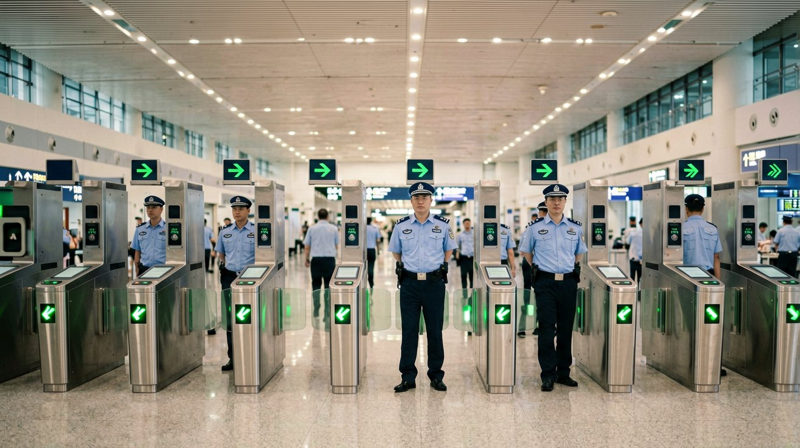
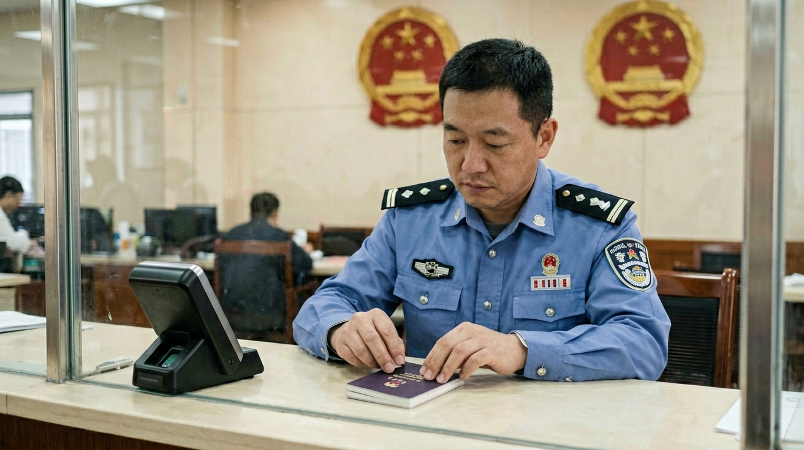
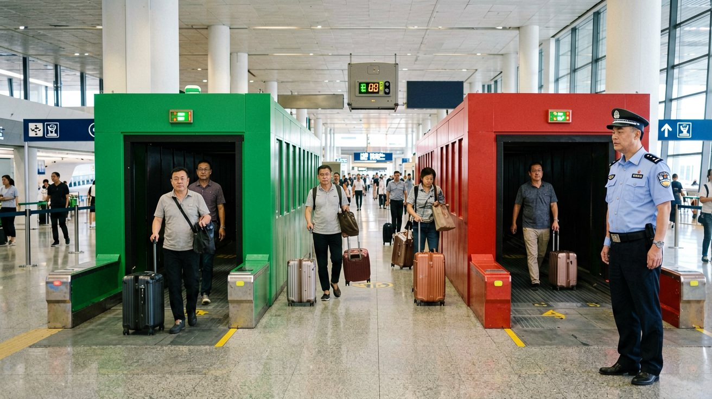
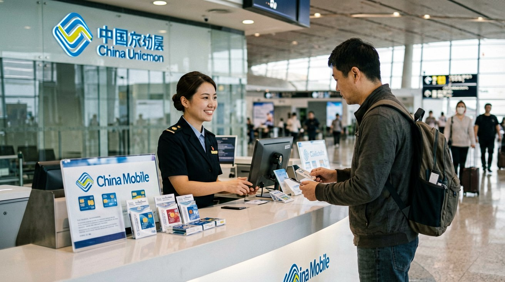
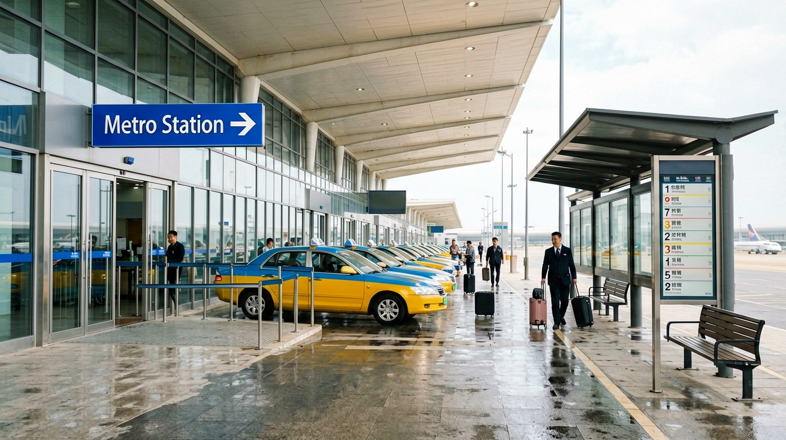

Last updated: June 2026.
You have your visa, you have your flight booked, and you have read up on mobile payment. Now comes the moment you step off the plane in China. Landing in a country where you cannot read the signs, your usual apps may not work, and the infrastructure runs on unfamiliar rules can feel disorienting. This guide walks you through every step from touchdown to hotel check-in: the arrival card, immigration, customs, getting a SIM card or eSIM, and every transport option from the airport — in that exact order.

The biggest change in recent years is that you no longer need to fill out a paper arrival card on the plane with a pen you borrowed from the person next to you. Since November 20, 2025, China's National Immigration Administration (NIA) allows all foreign nationals to complete their arrival card information online before departure. This means you can finish this step at home, at the gate before boarding, or at any point before you reach the immigration counter.
You have several ways to do it. The most straightforward is the NIA's dedicated website at s.nia.gov.cn/ArrivalCardFillingPC/ — open it in a browser and fill in your passport details, flight number, visa information, and address of your first night's accommodation. If you prefer using your phone, the "NIA 12367" app is available on major app stores, and both the WeChat and Alipay mini-programs have an arrival card entry under the NIA 12367 service section. There is also a QR code posted at immigration checkpoints that you can scan on arrival.
The information you need to provide is straightforward: full name, passport number, nationality, date of birth, visa type and number, flight number, and the address where you will stay. The form is available in both Chinese and English, and the online version auto-saves as you go. Once submitted, the system generates a confirmation that you can show at immigration — either as a screenshot or via the app. The system does not require you to print anything.
If you cannot or prefer not to fill in the online version, paper arrival cards are still available at immigration inspection sites. You can also use the self-service kiosks at major airports to complete the form digitally on the spot. A few categories of travelers are exempt: holders of a Chinese Foreign Permanent Resident ID Card, holders of a Mainland Travel Permit for Hong Kong and Macao Residents (non-Chinese Citizens), group visa holders, 24-hour direct-transit passengers staying within the port, cruise passengers entering and departing on the same vessel, E-channel users, and foreign crew members.
After you walk off the jet bridge, follow the signs marked "International Arrivals" and "入境" (rù jìng — entry). You will eventually reach a large hall with rows of counters. There are usually three types of lanes: lanes for Chinese citizens, lanes for foreign passport holders, and — at major airports like Beijing Capital, Shanghai Pudong, and Guangzhou Baiyun — automated E-channels that eligible foreign travelers can use. Check the overhead signs: foreign-passport lanes are clearly marked in English.

At the counter, the officer will ask for your passport and your arrival card confirmation (or the paper card). The officer will then take your photograph and collect your fingerprints. Fingerprint collection is mandatory for most foreign nationals entering China — both hands, all ten fingers. Children under 14 and adults over 70 are typically exempt from fingerprinting, though the exact practice may vary by port. The officer may also ask you a few basic questions: purpose of visit, length of stay, where you will be staying. Answer briefly and directly. If you are traveling for tourism, saying "tourism" or "sightseeing" is sufficient. The whole interaction at the counter typically takes one to two minutes.
Once cleared, the officer stamps your passport with an entry stamp. Check the stamp immediately. The entry stamp shows the date you entered and, in many cases, a handwritten or stamped note indicating your permitted duration of stay. Make sure the date is correct and the stamp is legible before you walk away. If anything looks wrong, politely point it out right then — correcting an immigration record after you leave the airport is significantly more difficult.
For travelers from countries eligible for China's unilateral visa-free policy or the 144-hour transit visa-free policy, the officer will verify your eligibility directly at the counter. No separate form is needed, but you must have your confirmed onward ticket readily available — either printed or on your phone. The officer will stamp your passport with a stay duration specific to the visa-free policy you are entering under.
After immigration, you head to baggage claim and then to customs. China uses a dual-channel system familiar to most international travelers: the Green Channel (nothing to declare) and the Red Channel (goods to declare). Most tourists walk through the Green Channel without any interaction, but you should know what triggers the Red Channel before you pack.

You must use the Red Channel and complete a customs declaration form if you carry any of the following: cash exceeding RMB 20,000 in Chinese currency or the equivalent of USD 5,000 in any foreign currency; gold, silver, or other precious metals exceeding 50 grams; any items for commercial purposes rather than personal use; or any goods subject to quarantine inspection (certain animal or plant products). The form is available at the customs area and asks you to list the items, quantities, and estimated value. It takes a few minutes to fill in and simply creates a record — it is not a tax demand unless you are over the duty-free allowance.
For personal belongings, China's duty-free allowance for inbound travelers is RMB 5,000 in total value for items purchased abroad, with an additional RMB 3,000 allowance for items purchased at duty-free shops within the arrival port. Standard allowances for alcohol and tobacco are two bottles of liquor (each no larger than 750 ml) and 400 cigarettes or 100 cigars or 500 grams of tobacco. Travelers arriving from Hong Kong or Macao get half the tobacco allowance — 200 cigarettes.
Common prohibited items include weapons of any kind, drugs and narcotics, counterfeit currency, publications or media deemed harmful to China's political or cultural interests, and certain food items such as fresh fruit, meat products, and dairy products that have not passed quarantine inspection. If you carry prescription medication, keep it in its original packaging with a copy of the prescription or a doctor's letter — especially for controlled substances, which Chinese customs officers scrutinize carefully. Personal electronics like a laptop, a tablet, and a camera are fine as long as there is only one of each and they are clearly for personal use. Bringing in two identical laptops in sealed boxes will raise questions.
The moment you step past customs into the arrivals hall, your first practical need is internet access. Without it, you cannot use maps, translate signs, call a ride, or message your hotel. Your home-country SIM will work through international roaming, but data rates are usually expensive. A better approach is to secure a local connection before you leave the airport.

The three major carriers — China Mobile, China Unicom, and China Telecom — all operate service counters in the arrivals halls of major international airports, including Beijing Capital, Beijing Daxing, Shanghai Pudong, Guangzhou Baiyun, and Chengdu Tianfu. You can walk up to any of these counters with your passport and purchase a prepaid tourist SIM card. The process takes about ten minutes: the staff member photocopies your passport, you choose a plan, pay, and they activate the SIM on the spot. Typical plans for short-term travelers cost around RMB 100 to RMB 200 and include 10 GB to 30 GB of data, plus a Chinese phone number valid for 30 days. Having a Chinese phone number is useful — some services like food delivery apps and train ticket booking require SMS verification to a local number — but it is not essential if you only need data. Tell the staff member what you need and they will recommend the right plan.
If you prefer to skip the counter, eSIM is an increasingly popular alternative. Providers like Airalo, Holafly, and Nomad sell China-specific or Asia-regional eSIM data plans that you buy and install before leaving home. An eSIM activates automatically once your phone connects to a Chinese network after landing. Prices range from about USD 5 for 1 GB over 7 days to around USD 30 for 10 GB over 30 days. The main drawback: you do not get a Chinese phone number, so you will rely on data-based apps like WeChat for everything. For most tourists this works perfectly well. Note that eSIM requires a compatible, carrier-unlocked phone; if yours is carrier-locked, a physical SIM at the airport counter is your only option.
Airport Wi-Fi exists at all major Chinese airports, but there is a catch: the login page usually requires a Chinese phone number to receive a verification code. If you do not yet have one, airport Wi-Fi is effectively unusable. Some airports offer a passport-based login at information desks, where staff print a one-time code, but this varies by airport and is not reliable. The practical bottom line: get a SIM card or activate an eSIM before you leave the baggage claim area. Everything that follows — hailing a ride, navigating the metro, messaging your hotel — depends on it.
Once you have your bags and your phone is online, the final leg of your arrival journey is getting from the airport to wherever you are staying. China's major airports are well connected to their cities, and you have several reliable options. The right choice depends on how much luggage you have, what time you land, and how comfortable you are navigating an unfamiliar transit system after a long flight.

The metro is the cheapest and often the fastest option. Beijing Capital Airport is connected by the Airport Express Line (RMB 25), which reaches the city center in about 30 minutes. Shanghai Pudong is served by Metro Line 2 and the maglev train — the maglev reaches Longyang Road in about 8 minutes (RMB 50 for a single ticket, or RMB 40 if you show a same-day flight boarding pass), while Line 2 takes about 60 minutes. Guangzhou Baiyun Airport connects to Line 3, and Chengdu Tianfu is linked by Line 18. Metro stations are inside or directly adjacent to the terminal buildings, with clear English signage. You buy tickets from machines that have an English-language option, or — far more conveniently — you can use the Alipay app's Transport function to generate a metro QR code that works at the turnstile. If you have not set up Alipay yet, read the Mobile Payment in China article on this site before you fly.
Taxis are the simplest door-to-door option but require a bit of preparation. Follow the signs to the official taxi queue outside the arrivals hall — do not accept rides from drivers approaching you inside the terminal, as these are unlicensed. At the taxi stand, a dispatcher will direct you to the next available car. Have your destination address written in Chinese characters, either on your phone or printed out. Most taxi drivers do not speak English, but showing them a Chinese address on your phone screen solves that problem instantly. Fares from major airports to city centers range from RMB 100 to RMB 250. All official taxis use meters — if a driver quotes a flat price instead, walk away and take the next car. Payment in cash is accepted but Alipay or WeChat Pay is far smoother; drivers rarely carry change.
Ride-hailing through Didi is widely available at all major airports, but there is a catch: the Didi app itself is only in Chinese. The better route is to access Didi through Alipay or WeChat. Both apps have a built-in ride-hailing mini-program that runs on Didi's platform with an English-language interface. Open Alipay, go to the Transport or Didi section, set your pickup point and destination, and a car arrives within minutes. The app shows the driver's license plate and estimated arrival time. Pickup points at airports are usually in designated ride-hailing zones — follow the signs for "网约车" (wǎng yuē chē — online-hailed car) within the parking structure. Payment is processed automatically through the app.
Airport buses are the budget option, with fares typically between RMB 15 and RMB 30. Routes serve major hotels and transport hubs in the city, and tickets are sold at counters in the arrivals hall. The tradeoff is speed: buses run on fixed schedules with fewer departures late at night, and city traffic can turn a 40-minute ride into a 90-minute one during peak hours. Airport buses make the most sense if your hotel happens to be near one of the bus route stops and you are not in a rush. Schedules and route maps are posted at the bus ticket counters and are usually available in English.
One final tip: download offline maps before you leave home. Google Maps is unreliable in China — its location data is often inaccurate. Offline-capable apps like Maps.me or Organic Maps let you download China map data in advance and navigate with GPS alone. Apple Maps also works in China without a VPN and provides accurate transit directions. Having a functioning map turns that first ride from a leap of faith into a routine journey.
This article is based on information as of June 2026.
Sources
Policies may change. Verify the latest information before your trip.